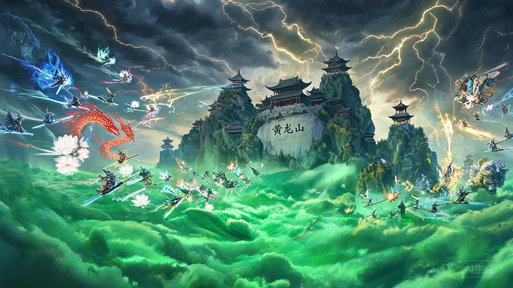
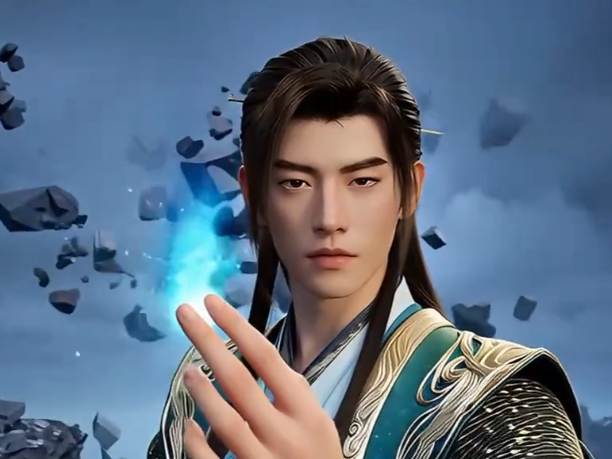
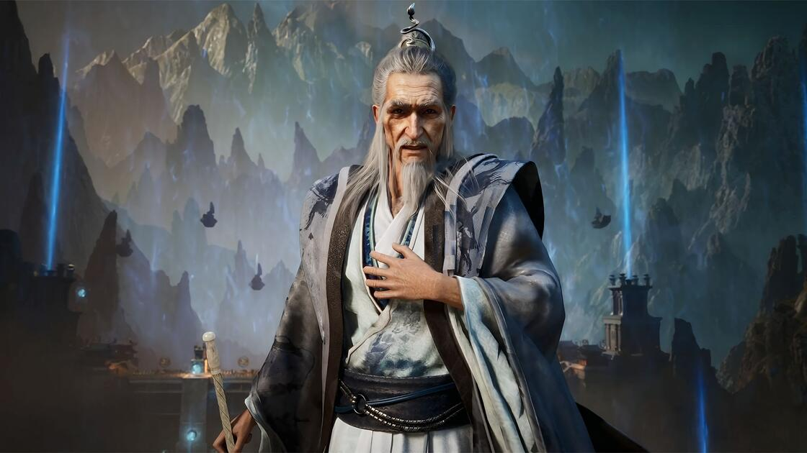
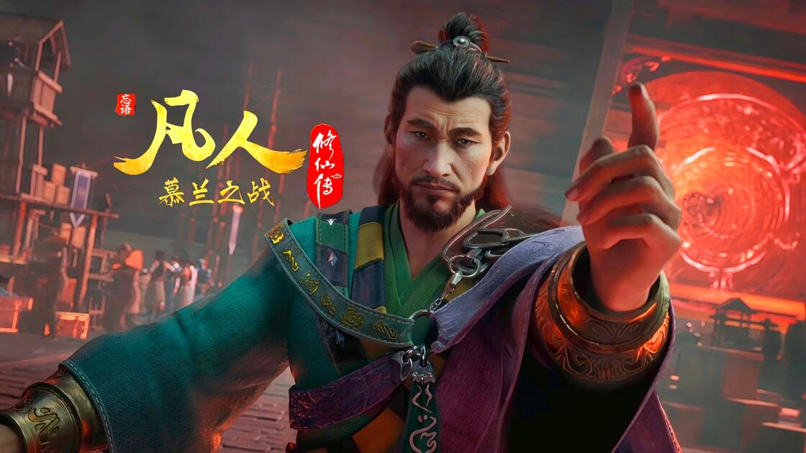
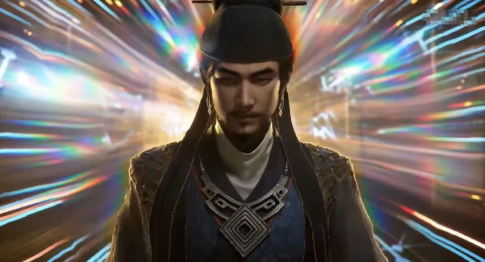
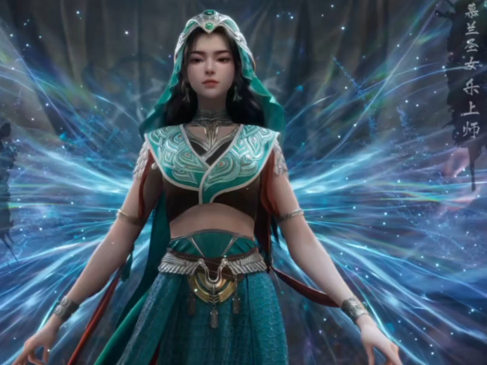
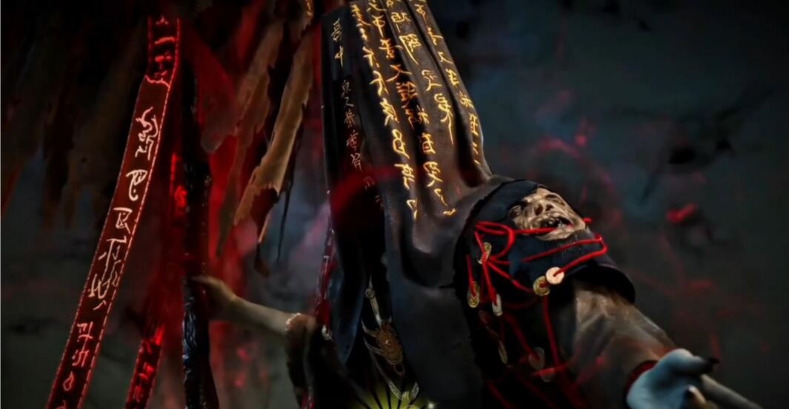

黄龙山大战是《凡人修仙传》中天南修仙界与慕兰草原法士之间的一场关键战役，发生于小说第七百二十六章至第七百四十四章之间，对应动漫约第186-192集。此战并非天南与慕兰的最终决战，却是整个慕兰大战中最具代表性的前哨战之一。
慕兰草原法士因被突兀人击败，意图占据天南地区夺取资源壮大实力。除防御突兀人的第一大部落金阳部外，慕兰精锐尽出。九国盟自知难以抵挡，联络正道、魔道、天道盟三大势力共同抗敌。三大势力先派部分元婴、结丹修士辅助九国盟镇守各处要地，拖延慕兰大军脚步。
黄龙山位于虞国离州边上，是九国盟设置的重要防御要塞之一，布有千音幻化阵大阵。此阵以碧绿雾海覆盖方圆数十里，是天南方面阻击慕兰法士前进的关键节点。陆元镇作为黄龙山最高指挥者，率结丹修士驻守此地，后有韩立、马知墨、谷双蒲三名元婴修士前来支援。
小说原文如此描述黄龙山的战前氛围：
天南方面共出动五名元婴修士及若干结丹修士，依托黄龙山千音幻化阵进行防御作战。以下逐一分析各核心战力。



谷双蒲——明面为魔道御灵宗长老，实为慕兰卧底。元婴初期，擅长附灵术，可与双尾翡翠蛇合体化为附灵蛇怪，战力接近元婴中期。被韩立以辟邪神雷和乾蓝冰焰识破并秒杀。综合战力：60。
卜云鹤——九国盟镇守天台谷的元婴修士，天台谷被攻破后败退黄龙山。因受伤严重，始终处于养伤状态，未能参战。马知墨接应其撤退。综合战力：45。
黄龙山还有冲虚子（清虚门道士）、慕容兄弟（黄枫谷同胞兄弟，修炼雷系法术）、李缨宁（化刀坞女修，韩立旧识之女）等结丹修士驻守。他们在元婴修士或死或逃后，见势不妙提前逃遁，得以保全性命。
慕兰方面共出动四名元婴修士（含一名后期大修士后来增援），以乐上师为核心指挥，携巨兽与大军强攻黄龙山。



窟耀——慕兰拜火部大上师，元婴初期。擅长火系灵术，火蟒乃天地火灵凝化生成，可化为火蛟攻击。以火灵化蛟破了马知墨的太玄八卦图，两败俱伤。综合战力：55。
温上师——高瘦法士，元婴初期。灵术厉害，手段诡异，发射"数十道拇指粗细的黑芒如同骤雨般激射"。实力与窟耀相当。综合战力：52。
以下图表直观展示黄龙山大战双方元婴修士的综合实力排名及整体战力对比。
从雷达图可以看出，天南方面在元婴数量和阵法加成上占优，依托千音幻化阵以逸待劳；慕兰方面则在顶尖战力和战术谋略上更胜一筹，尤其是仲神师的元婴后期修为形成降维打击。双方在法宝底蕴上旗鼓相当——天南有韩立的辟邪神雷和乾蓝冰焰，慕兰有元明灯和黄灵鼎。
慕兰法士大军压境，窟耀率先叫阵。马知墨主动出战，以银色戒尺法宝和古宝太玄八卦图对抗窟耀的火灵化蛟。韩立暗中传音提醒马知墨注意火蟒并非普通灵兽。双方激战，太玄八卦图被火蛟毁坏，窟耀也付出代价，两败俱伤。此战天南方面略占上风。
天哭先生以天刹真魔功出场，气势惊人，陆元镇等皆不敢出阵。韩立却主动迎战，以辟邪神雷一击瞬杀天哭——金色电弧恰好是魔功克星，天哭根本来不及反应。
随后谷双蒲被揭穿卧底身份，其附灵蛇怪脱困而出。韩立再以乾蓝冰焰和辟邪神雷将其秒杀。两战两杀，韩立一战成名，令在场所有修士震惊。
陆元镇与马知墨商议将计就计——利用已暴露的谷双蒲做文章，假装大阵被破坏，引诱慕兰法士深入。他们撤去雾海，让黄龙山看似人去楼空，实则暗中设伏。
乐上师率军到来，虽有疑虑但判断时间紧迫，必须推进。三百名法士被诱入大阵深处搜刮战利品。一声钟鸣，千音幻化阵重新启动，碧绿雾海重聚，将入侵法士困于阵中。
慕兰大军强攻大阵。乐上师携巨兽亲临，与韩立正面交锋。这场战斗是黄龙山之战的巅峰对决：
战至关键时刻，乐上师已被压制——元明灯被收走，风遁术虽难以击杀但已处下风。若非仲神师到来，乐上师将彻底落败。
仲神师因韩立秒杀天哭而前来查看，他的到来彻底改变了战局。作为元婴后期大修士，其神通远超在场所有人：
韩立被仲神师追杀四天四夜，辟邪神雷难以支撑风雷翅，连续施展三次血影遁方才脱身，但大耗元气。仲神师因神识范围限制和韩立的狡猾逃脱，最终放弃追杀。
黄龙山最终失守，天南方面元婴修士一死二逃一伤，慕兰方面仅损失天哭和谷双蒲（均为韩立所杀），仲神师毫发无伤。以下是详细战损统计：
| 修士 | 修为 | 结局 | 原因 |
|---|---|---|---|
| 陆元镇 | 元婴初期 | 阵亡 | 被仲神师击杀 |
| 韩立 | 元婴初期 | 逃遁（大耗元气） | 三次血影遁脱离仲神师追杀 |
| 马知墨 | 元婴初期 | 逃遁（失躯体） | 被乐上师击溃躯体，元婴逃遁 |
| 卜云鹤 | 元婴初期 | 伤退（未参战） | 天台谷败退后一直养伤 |
| 谷双蒲 | 元婴初期（卧底） | 被杀 | 被韩立识破后以乾蓝冰焰秒杀 |
| 李缨宁、慕容兄弟 | 结丹期 | 逃遁 | 见势不妙提前逃离 |
| 修士 | 修为 | 结局 | 原因 |
|---|---|---|---|
| 仲神师 | 元婴后期 | 无伤 | 追杀韩立未果后自行返回 |
| 乐上师 | 元婴中期 | 存活（元明灯一度被夺） | 仲神师夺回元明灯，乐上师击溃马知墨 |
| 窟耀 | 元婴初期 | 存活（受伤） | 与马知墨两败俱伤 |
| 温上师 | 元婴初期 | 存活 | 未见明显战损记录 |
| 天哭先生 | 元婴初期 | 被杀 | 被韩立辟邪神雷瞬杀 |
| 谷双蒲（卧底） | 元婴初期 | 被杀 | 被韩立乾蓝冰焰秒杀 |
黄龙山之战失守的最直接原因，是仲神师这位元婴后期大修士的意外出现。在韩立秒杀天哭之前，天南方面凭借千音幻化阵和韩立的超规格战力，实际上占据上风。仲神师的到来彻底打破了平衡——元婴后期对元婴初期的碾压是质变而非量变，陆元镇被一击击杀，马知墨断臂逃遁，韩立连交手的念头都不敢有。
谷双蒲作为慕兰安插在天南魔道的卧底，其身份暴露虽然被韩立迅速处理，但这一事件提前触发了慕兰的总攻。原本谷双蒲应在慕兰攻击到一半时才撤去禁制以全歼守军，其暴露后陆元镇将计就计反而先手设伏。然而这也意味着天南失去了一个可能继续潜伏的情报优势。
从战略层面看，黄龙山只是九国盟边境的一处防御要塞，天南方面仅派了三名元婴初期修士支援，连元婴中期修士都未派出，说明其战略权重有限。黄龙山注定是要失守的——天南方面的战略目标仅是拖延时间，为后方集结主力争取窗口期。
卜云鹤从天台谷败退后一直养伤，使得天南方面实际可战元婴修士从五人降为四人（含卧底谷双蒲），去掉卧底后仅剩三人。若卜云鹤完好参战，天南方面的元婴战力将更为充裕。
黄龙山之战的真正转折点并非仲神师到来，而是韩立秒杀天哭。正是这一战果引起了仲神师的注意，使其前来查看。若天哭未被秒杀，仲神师不会出现在黄龙山，天南方面很可能守住黄龙山——甚至可能击退慕兰法士。韩立的过强战力反而引来了更强的对手，这是此战最具讽刺性的悖论。
黄龙山之战后，韩立的名声响彻天南与慕兰两方面。秒杀天哭和谷双蒲的战绩、与乐上师的正面交锋、从仲神师手中逃生的壮举——每一件都足以令人侧目。仲神师为挽回颜面，评价韩立"神通甚至稍胜普通元婴中期修士一筹"，这一评价被慕兰法士广为传播，反而使韩立名声更盛。
黄龙山失守后，在三大神师率先出手的情况下，法士大军仅花费半个月就推进到了阗天城下。九国盟措手不及，幸得天南三大修士之一的魏无涯赶到，依靠阗天城禁制大阵坚持月余。但三大神师齐聚后以七八头巨兽破阵，阗天城最终沦陷。九国盟主力撤至虞国北凉国，天南四大势力联手暂时抵挡住慕兰锋芒。
韩立在黄龙山之战中以紫罗天火包裹住沾染在青竹蜂云剑上的元明灯青焰，但这股火焰始终在体内燃烧不息，成为一大后患。韩立闭关大半年才恢复元气，之后又花费大量时间设法去除青焰，这是此战留给韩立的最大后遗症。
动漫版对黄龙山之战进行了精彩改编，尤其以下几处令人印象深刻：
黄龙山大战是《凡人修仙传》中一场典型的"以弱守强"战役。天南方面虽在元婴数量上占优，且韩立的超规格战力一度扭转局势，但仲神师这位元婴后期大修士的意外到来，使得所有优势化为乌有。此战的核心启示在于：在修仙世界中，一个大境界的差距往往无法用数量和阵法弥补。
然而，韩立在此战中的表现——秒杀两名元婴修士、正面对抗元婴中期的乐上师并占据上风、从元婴后期的仲神师追杀中逃生——使其真正跻身天南顶尖修士之列。黄龙山之战虽败，却是韩立名震天南的起点，也是整个慕兰大战中最具传奇色彩的一场前哨战。
黄龙山之战，天南以五元婴对阵慕兰四元婴，韩立一人独杀其二，却被一个不该出现的元婴后期大修士仲神师彻底翻盘——这既是修仙世界残酷的弱肉强食，也是韩立踏上天南巅峰的奠基之战。